Online Courses Platform
Led end-to-end UX of Nova Escola's self-instructional courses platform — from the first MVP through a subscription-to-DTC pivot. Built continuous discovery loops, B2C purchasing flows, a full virtual learning environment, and live broadcast strategies that in 2020 alone reached 100,000+ educators with a 84 average NPS.
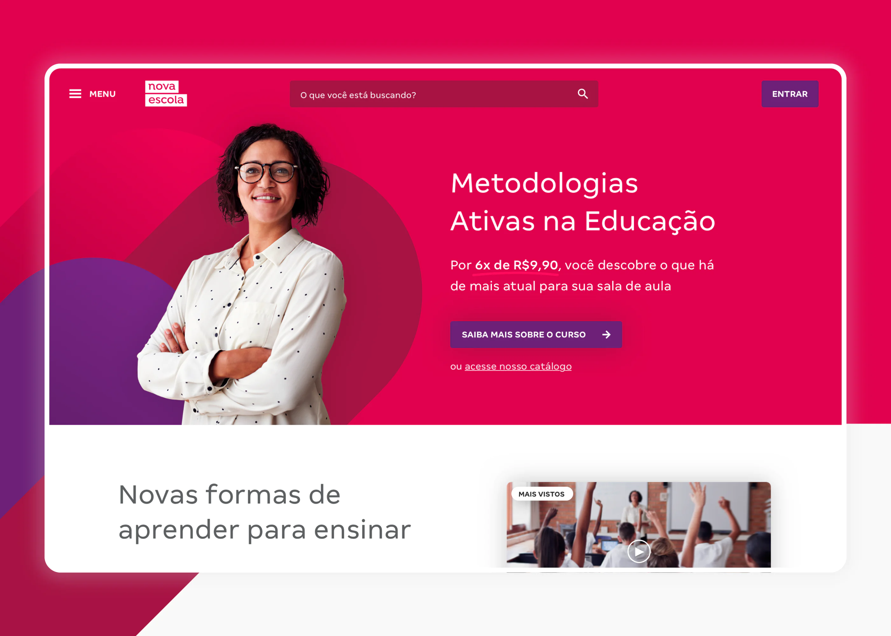
Scenario and roles
With the mandatory implementation of the new Common National Curricular Base (BNCC) in 2019, educators of the Brazilian public school system had the great challenge of adapting all their knowledge and classes to a new way of teaching and planning their content. Given this need for diverse, formative content, aligned to the BNCC and with a wide scope, Nova Escola, in partnership with Omidyar and Lemann Foundation, was placed in the market of self-instructional courses in an attempt to meet this demand.
As UX Designer of the product, I was invited to build it from the first MVP tests that were designed by the previous Management Team, crafting a proper user experience for the product — in this case, a virtual learning environment built from start to finish — as well as a business model transition from subscription to Direct-to-Consumer. Operating in the newly created UX area of the Association, the goal was to bring the voice of the teachers to the product and implement an evidence and data based approach.
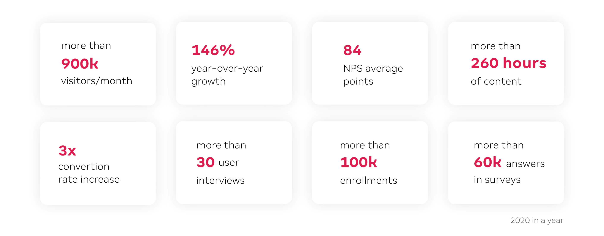
Example of a paid course Detail Page on the Nova Escola platform.
Deliverables
Continuous discovery process: from interviews about course consumption to usability tests with low, medium and high fidelity prototypes depending on the need. From in-person experiences — going to schools all over Brazil — to remote experiences, by phone or video call. There were also quantitative surveys, both those focused on specific needs and those inserted within the product experience, such as satisfaction and NPS surveys, many of them reaching more than 40,000 responses.
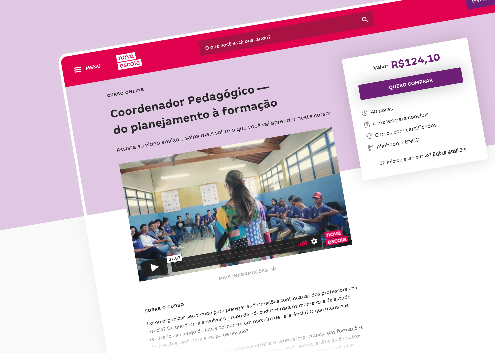
In 2020 alone, more than 35 in-depth interviews and usability tests were conducted.
Launch strategies and customer interaction: Synchronous recording of the courses, with live broadcasts, offering promotions for the first buyers and generating engagement between the public and the brand.
B2C Sales – From catalog to cart: Structuring the entire buying experience of the product, from navigating the options and filtering interests to confirming the purchase and being guided to start using the product.
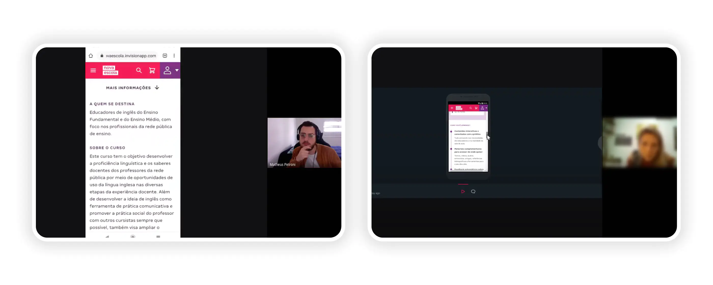
Example of a registration page for live meetings, where paid courses are broadcast for free and sold with promotional value and where free courses generate engagement for other products or sections of the Nova Escola platform. At the end of the registration form there is a space for research and sales targeting, generating high click-through conversion and confirmation of the intended actions.
Page of the live meeting on the Nova Escola platform, with a space for interaction with the participants.
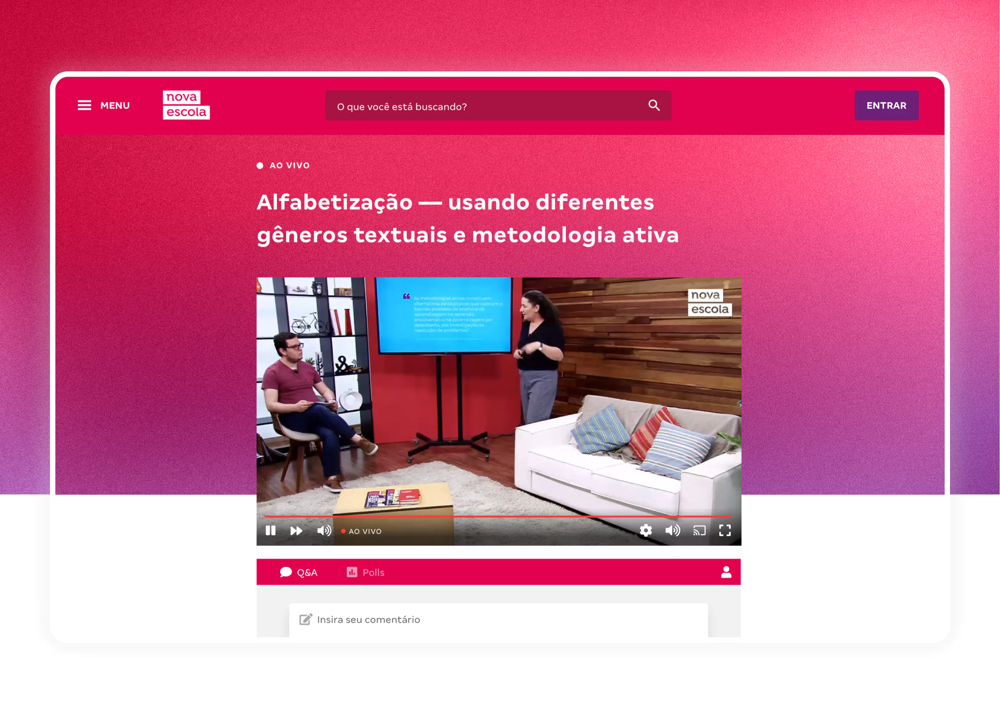
A catalog for B2C sales and promotion of Nova Escola's free courses. Both coexist with different functions — the free courses generate engagement from the teachers and value for various partnerships, while the paid ones usually address more niched subjects and bring more exclusive benefits to course attendees.
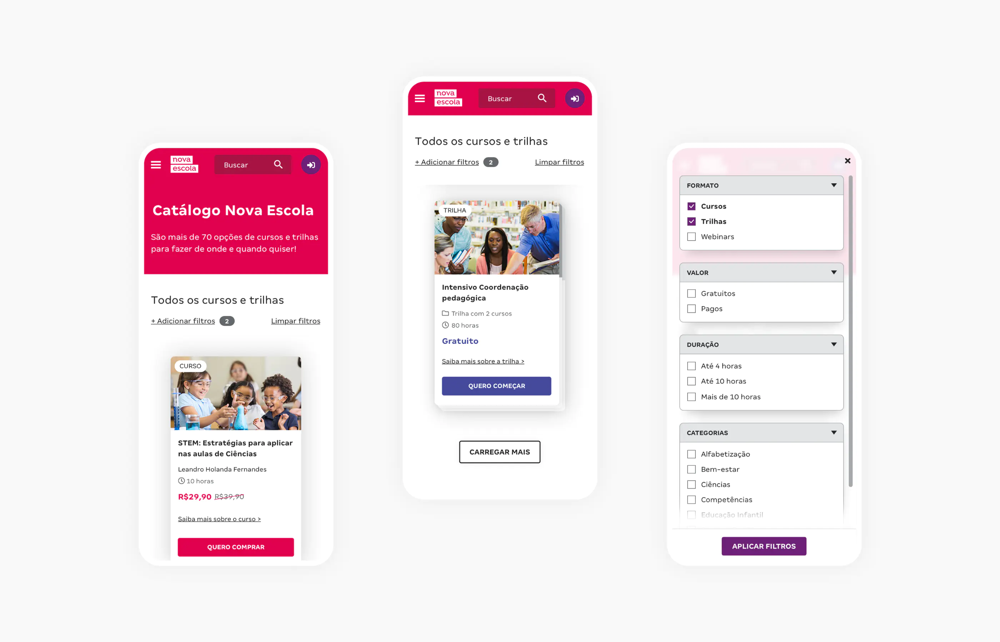
Example of a carousel menu for courses that the participant has already started on the platform.
On the detail page, features such as component attachments and fixed footers are used to highlight the main actions on the page.
Example of a cart page, where the student can check the courses they are buying and add discount coupons before the purchase is made. There is also a dedicated space to promote other items related to the course being purchased.
A virtual learning environment from start to finish: All the necessary strategies to build a virtual learning space, from the hierarchy of information to the processes of evaluation, certification and certificate validation.
Transactional emails: Communication triggers designed based on the user steps within the product, with monitoring of read rates and process improvements based on evidence.
Annual Black Friday campaigns: Strategic moment to think usage flow, integration with other products of the company, purchase quantity and the value proposition of the product.
Continuous monitoring: Creation of events and conversion funnels for the main pages of the product, screen recordings of real users, monitoring of billing, access, single users and other relevant information, recurring NPS and satisfaction surveys, A/B tests to validate interfaces, and more.
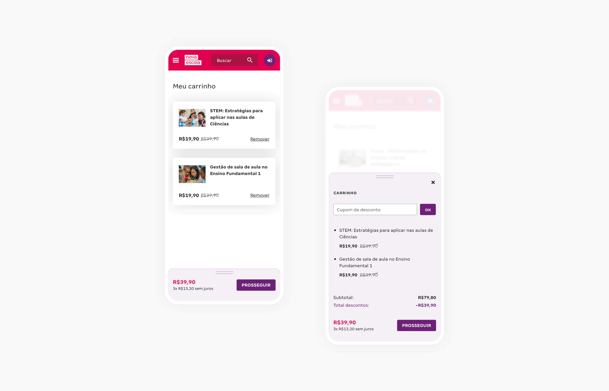
Some details of the Nova Escola Virtual Learning Environment. The entire structure was built in-house, from the publisher to the learning objects used on the platform.
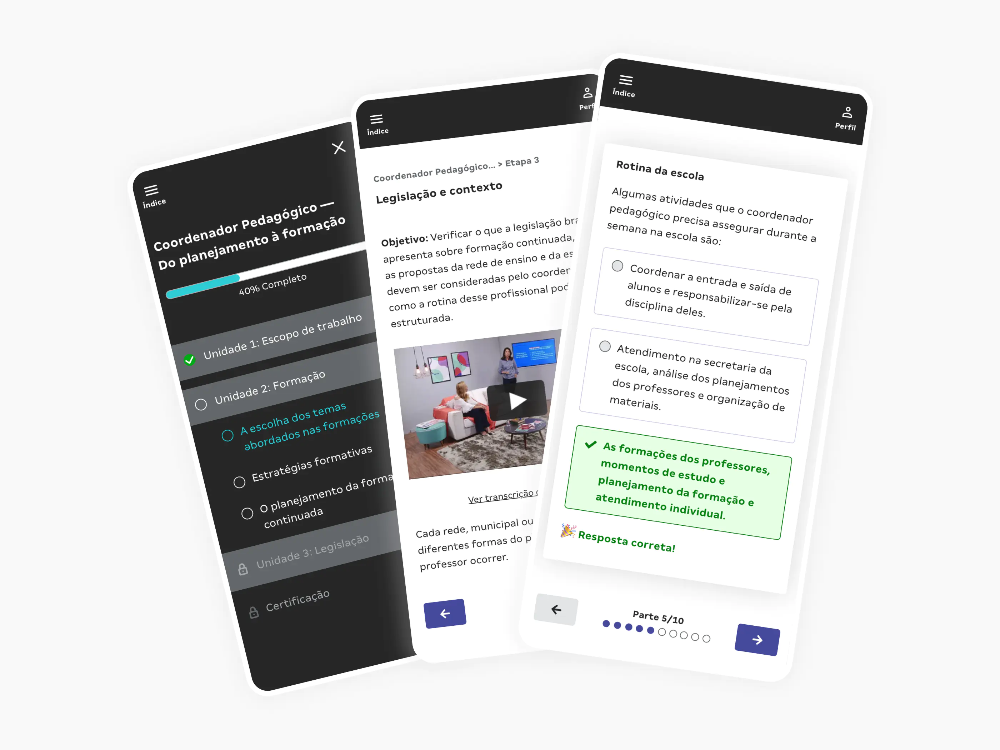
Example of the certification and certificate validation page available in the Nova Escola Virtual Learning Environment. All certificates issued have their own code for verification of authenticity plus a QR Code.
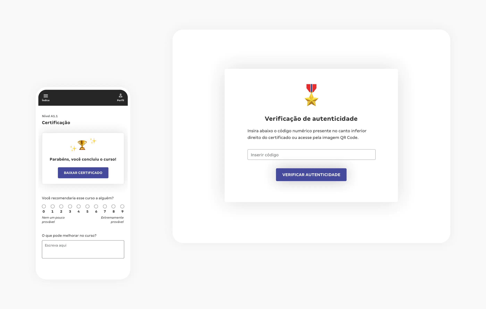
Example of Nova Escola's Black Friday campaign for self-instructional courses. Here, the feature of selecting more than one course generated impressive purchasing results, which impacted on the average ticket value for the period.
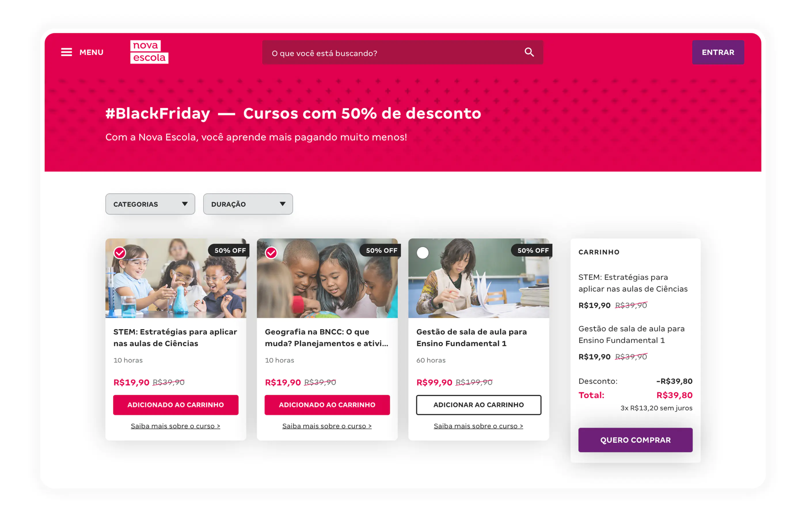
Results and learnings
In the time span of just over two years, the product growth was remarkable, as it became one of the main highlights of the educational self-instructional courses market and attracted investment for the implementation of free projects from large companies such as Google, Facebook, Omidyar, Itaú Social, Volkswagen Foundation, British Government, Gerdau, and others.
In 2020 alone, more than 100,000 educators started a Nova Escola course, with an average NPS of 84 points across courses and 3x higher revenue growth over the previous year for paid courses. While paid courses are structured in a more robust way and ensure a good annual growth in product revenue, free courses generate in return social investment, brand engagement and greater access to the content produced.
In addition, the way the releases were structured — in large multi-platform live broadcast events — provided us with a lot of learning in real time and a constant proximity to the end users, making the product increasingly adapted and improved to meet the real needs of the educator.
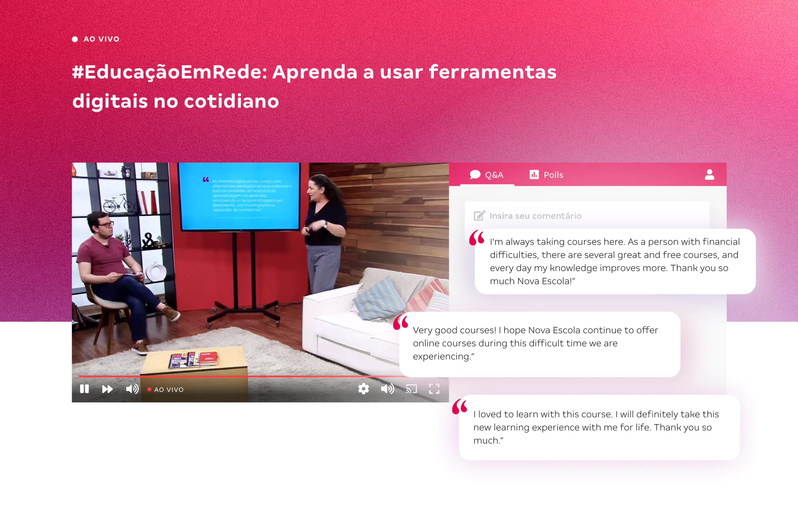
To summarize such intense learning is a difficult mission. Overall, it was very rewarding to follow a product from its launch as the minimum viable product until its consolidation in the market and proof of value, overcoming all the moments of distress, of actions that did not bring the expected result or even doubts about the path we were following.
Learning to work with the interdisciplinary nature of the squad was fundamental, in which the participation of each person contributed to the successful results. This collaborative approach led us to crucial moments that, although challenging, gave us the most learning, process maturity, and generation of new ideas.
During this period, I managed to engage the team on the importance that active listening to the user's needs has for decision making, making a real impact on their lives with our products. This was very evident in every feedback received through our satisfaction survey channels. In addition, I learned a lot about making decisions based on evidence and data, which further strengthened my performance as UX Designer and, consequently, the team's respect for the real needs of our audience.
Team: Matheus Petroni (Product Designer), Karine Presotti (Product Manager), Juliano Dias (Product Marketing), Bárbara Castro (Content Coordinator), Vanessa Camargo (Content Assistant), Juliana Reis, João Victor Bispo and Daniel Barreto (Developers).